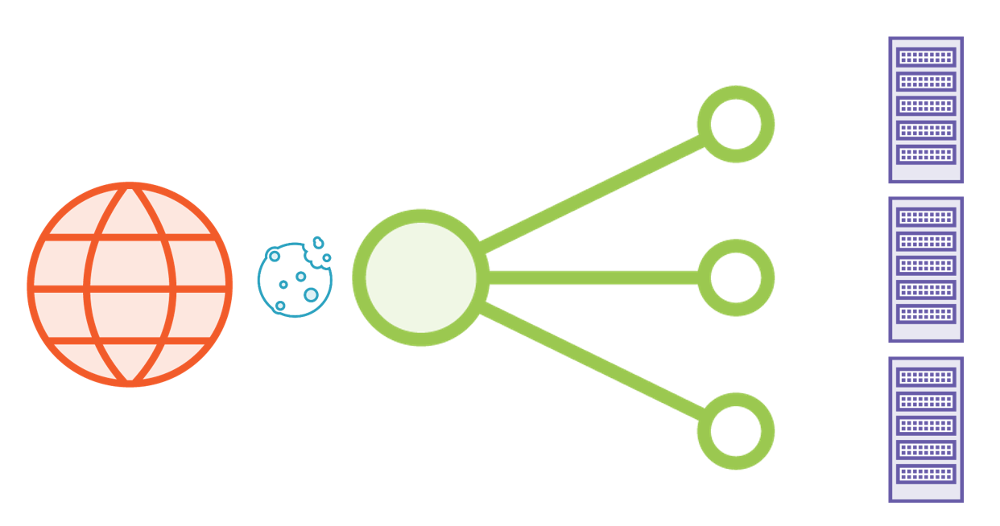
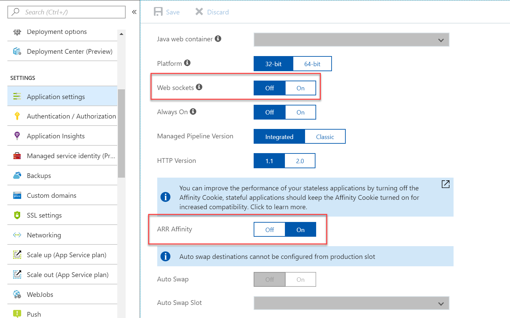
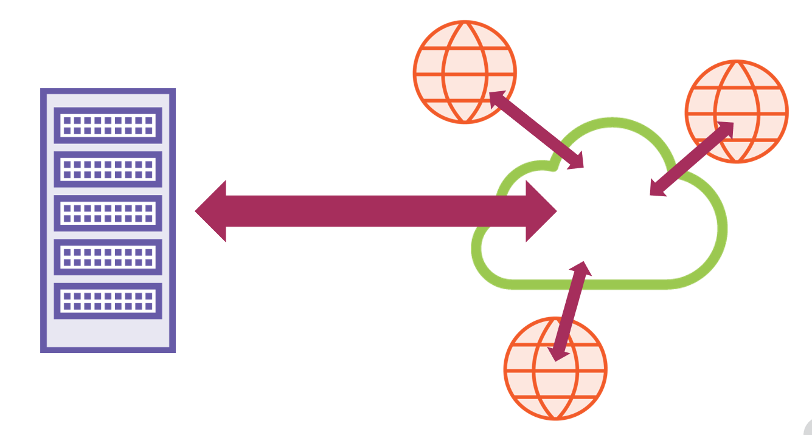

前言
最近项目要用signalr来做实时通信，在研究asp.netcore signalr 应用横向扩展时候发现了这篇国外的博客，和大家分享一下
原文连接地址
负载均衡
当你把你的应用部署到生产环境时，你将会想横向扩展你的应用。横向扩展意味着要你的应用要在多台服务器上运行。
当应用运行在云端进行横向扩展时，你要考虑的主要问题时设置你想运行服务器的数量。有一种叫做负载均衡的机制，
这种机制会对每个传入的请求选择一个服务器。负载均衡能按照顺序选择不同的服务器或者根据其他的处理逻辑继续选择同一个。
Websockets
当使用web sockets时没有什么问题（译注：意思指使用无状态的负载均衡时候）。因为web sockets一旦建立了就像服务端和浏览器建立了一个管道。但是当使用轮询或者长轮询时候就可能出现，每个消息时不同的请求并且每个处理的请求都能转换到不同的服务器。服务器坑不知道之前发送到这个客户端的消息和关于这个消息的上下文。
举例你的应用被横向扩展到不同服务器上，服务器1正在获取关于准备订单1（prepare order 1）的请求然后它开始处理这个请求。当你使用长轮询方式进行请求时候，接下来的请求会通过负载均衡分配到不同的服务器。这个服务器是不知道关于 订单1（order1）的信息的。
对于服务端发送事件（译注：关于服务器发送事)也会出现同样的问题，因为http连接可能会被删除，这个连接将立刻会通过在浏览器的事件源（EventSource）恢复。
粘连会话（Sticky Sessions）
我们能通过使用粘连会话解决这个问题。粘连会话有很多种实现，大部分实现方式如下，对于第一次请求的响应负载均衡能在浏览器设置一个cookie用来指明这个使用的服务器。在接下来的请求负载均衡能读取这个cookie并且分配这个请求到同一台服务器。

IIS和Azure web应用的粘连会话的版本称作应用请求路由关联（Application Request Routing Affinity ）或者 ARR Affinity。自从SignalR能使用 非web sockets 传输协议，当你使用已经安装好ARR Affinity 模块的IIS内网服务器时，你就应该在你应用运行的所有的服务器端开启它。同时也要确保web sockets也同样是要开启的。否则你的服务器将会使用服务器发送事件。

在不同应用实例之间同步客户端
但是这里会存在另外一个问题。举例说一个使用Office 365的用户通过web document 工作，然后她邀请了其他人加入。其他人可能在与先前用户不同的服务器上。现在当使用服务器1的用户（译注：指第一个用户）不得不发送 改变文档的消息到其他人。但是服务器1不知道在其他服务器上连接这个 管道（Hub）上的其他用户的信息。为了解决这个问题服务器需要一种方式进行数据共享。这样方式能通过数据库来实现，但是用一个存储更快的可替代的方案就是使用redis缓存。SignalR支持开箱即用的redis，我们接下来就会看到。它实际上就是使用了Redis内置的发布订阅功能来同步不同服务器上的客户端信息。
解决这个问题是非常简单甚至不需要一个截图。安装一个Microsoft.AspNetCore.SignalR.Redis nuget包。然后在startup类中的 configure services方法中的AddSignalR后面输入 AddRedis 并且传入一个redis连接字符串。你能自己搭建Redis服务器或者使用 Azure Redis service。除了Redis你同样也可以使用社区构建的其他数据存储。但是Redis的优势就是它甚至不需要持久化这个数据。
Azure SignalR Service
除了粘连会话、Redis 缓存我们还没有讨论连接限制。每个客户端同时有六个连接的Http连接限制。当使用长轮询或者服务器发送事件这个限制很快就会达到了。即使web sockets也有大约50个连接限制。如果你不喜欢管理这些东西，这里有一个一站式解决方案：Azure SignalR Service。它的工作原理如下：

所有的客户端连接都被托管在Azure SignalR Service上，所以客户端并不是真正连接到你应用运行的服务器上。当一个新的客户端连接或者你发送一个消息到所有的客户端或者分组或者独立的客户端时候，你的应用实际上经过了一个管道连接，这个管道连接负责与SignalR Service（译注：指Azure SignalR Service）通信。只要你为需要同时支持的连接付费，那么你所有包含hub的应用代码只需要运行在服务器上，你关心的 粘连会话、Redis缓存以及连接限制都将不是事儿。
结合Azure SignalR Service 和增加Redis缓存一样简单。(译注：这里有一个github上关于signalr 客户端同步的issue，供大家参考一下，链接地址)